Sumita
Sumita · Iwate
Sumita
Highlighted on the Iwate map.
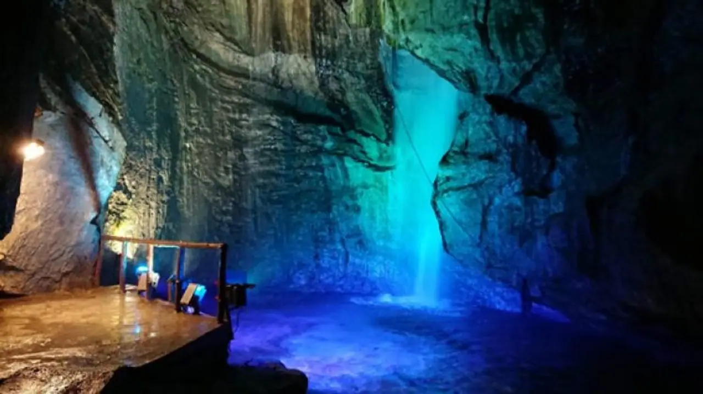
Stay
ホテルグリーンベル高勘
Hoteruguriinberu Taka Kan
Hotel in Sumita, Iwate.
Dining
道の駅 種山ヶ原 ぽらん
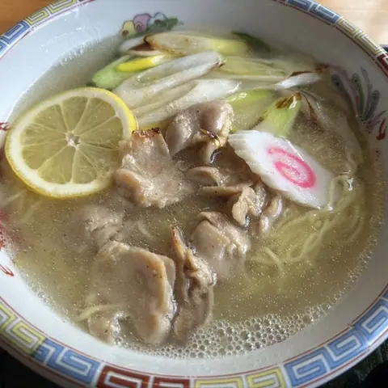
Michi No Eki Taneyama Ke Hara Poran
Roadside-station eatery in Sumita, Iwate.
南部屋
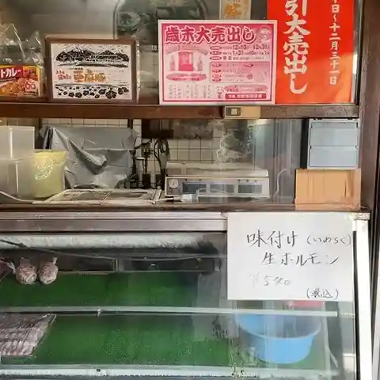
Nanbuya
Chinese restaurant in Sumita, Iwate.
けせんのだいどころ ケラッセ
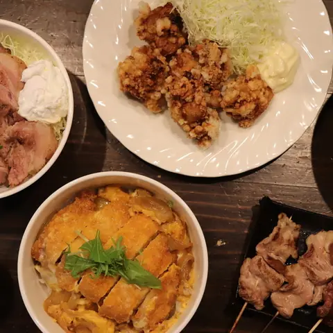
Kesennodaidokoro Kerasse
Shokudo diner in Sumita, Iwate.
松嶋家
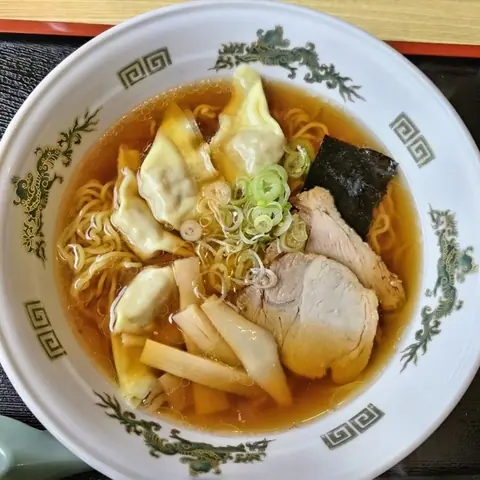
Matsushima Ie
Noodle shop in Sumita, Iwate.
味噌屋 麺太
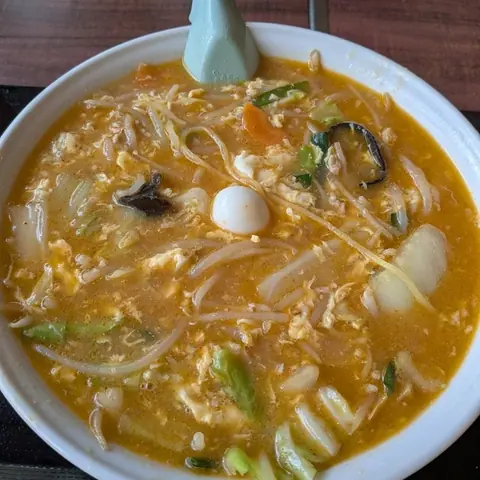
Miso Ya Men Ta
Ramen shop in Sumita, Iwate.
和風レストラン 味求
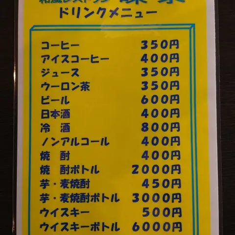
Wafuu Resutoran Aji Kyuu
Japanese restaurant in Sumita, Iwate.
US COFFEE
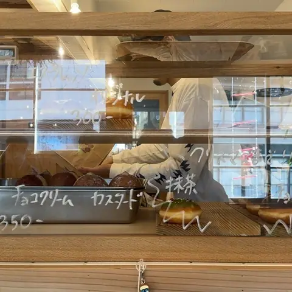
Us Coffee
Café in Sumita, Iwate.
おらいの滝観洞
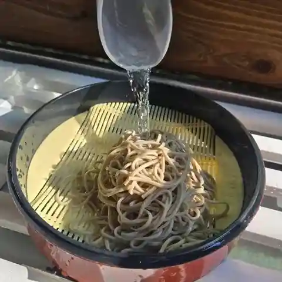
Oraino Taki Kan Hora
Shokudo diner in Sumita, Iwate.
黄金屋
Ougon Ya
Shokudo diner in Sumita, Iwate.
お菓子工房 イートプラス
O Kashi Koubou Iitopurasu
Cake shop in Sumita, Iwate.
みんなのいわま
Minnanoiwama
Jingisukan (lamb BBQ) restaurant in Sumita, Iwate.
ケーキ＆フーズイマノ
Keeki & Fuuzuimano
Western sweets shop in Sumita, Iwate.
寿美多うおまさ
Sumi Oou Omasa
Shokudo diner in Sumita, Iwate.
すみカフェ
Sumi Kafe
Café in Sumita, Iwate.
古鏡
Kokyou
Shokudo diner in Sumita, Iwate.
青空
Aozora
Taiyaki shop in Sumita, Iwate.
Sights
Hayama Megane Bridge
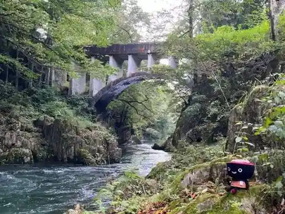
Hayama Megane Bridge, which spans the Kesen River that flows through Sumita Town, is an arch-shaped concrete bridge built in 1930.
Sumita Chicken Harami
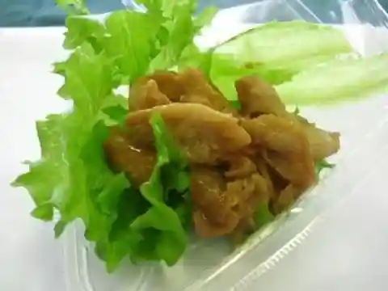
Chicken skirt steak is the muscle of the abdominal wall near the base of the chicken's thigh, and is the most trained part of the chicken.There are only two parts per chicken, and it weighs only about 10g, making it an extremely valuable part.
Yurin Land Taneyama
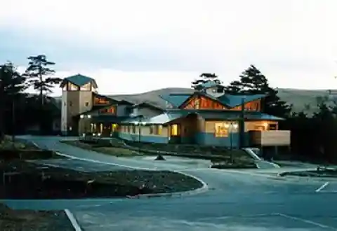
Taneyamagahara was loved by Kenji Miyazawa. "Yurin Land Taneyama" has an observation deck with a 360-degree view and a Japanese-style room where you can relax after a walk, supporting your stay in the highlands.
Mt. Goyo
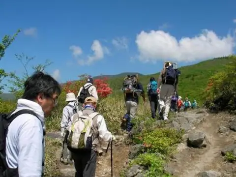
A mountain with an altitude of 1,351m and semi-plain terrain.
Taneyamagahara Forest Park
A promenade based on Kenji Miyazawa's works has been built in a beautiful forest starting from Yurin Land Taneyama.